Google Earth Enterprise Documentation Home | Install Google Earth Enterprise
GUI installer
- Overview
- Before you begin
- Installing Google Earth Enterprise Fusion
- Installing Google Earth Enterprise Server
Overview
This section provides information about installing Google Earth Enterprise Fusion, Google Earth Enterprise Server, the Google Earth Enterprise Fusion tutorial files, and the additional files and features provided in the software package.
Both a graphical user interface (GUI) and a command-line installer are available for Google Earth Enterprise Server and Fusion. A silent installation option is also available if you want to install on multiple machines without user interaction. Use the command-line installer if you are installing on a server without an X11 server.
The GUI installers are recommended for most Google Earth Enterprise Fusion and Server installations. During installation, you are prompted and guided through the process automatically.
Before you begin
The Google Earth Enterprise software is available in two formats: as a download from Google.com servers, or on physical media in the form of DVDs. The instructions below are the same for both formats, once the following setup has been completed:
If you downloaded the software package
Unpack the archived installer(s) to a temporary directory:
tar -zxvf GEEFusionPro-5.1.0.tar.gz -C /target/directory
tar -zxvf GEEServer-5.1.0.tar.gz -C /target/directory
If you ordered the DVD
Insert the distribution DVD, and mount the DVD drive.
Installing Google Earth Enterprise Fusion
- Open a terminal window on your Linux workstation.
- Log in as
root. - Stop the Google Earth Enterprise Fusion system manager and Google Earth Enterprise Server, if you have a previous version installed and they are running:
/etc/init.d/gefusion stop
/etc/init.d/geserver stop
Note: If you try to run the Google Earth Enterprise installer using a secure shell (ssh -XY user@machine), you might get the following error:
X11 connection rejected because of wrong authentication. X connection to localhost:10.0 broken (explicit kill or server shutdown)If you do, set the following variable to point to the X11 authorization file:
export XAUTHORITY=~/.Xauthority
- Navigate to your DVD directory, or the directory to which you extracted the Google Earth Enterprise files, and run the Google Earth Fusion installer:
cd /media/cdrom
./InstallGEFusionGUI.sh
If your DVD automounted without exec privileges, you might need to run
sh ./InstallGEFusionGUI.shinstead.The installer starts, performs a check for disk space, then the following window appears:
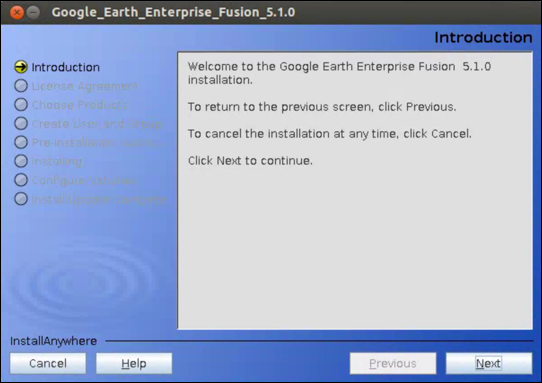
- Click Next to continue. You can click Cancel to exit the installation process or Previous to return to the previous screen at any time. The License Agreement appears:
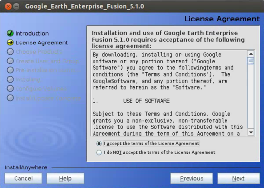
- Accept the License Agreement and click Next.
If Google Earth Fusion is already installed, the installation checks for invalid asset names. Any asset names that are flagged as invalid are listed.
- The installation process provides you with the option to back up your previous configuration.
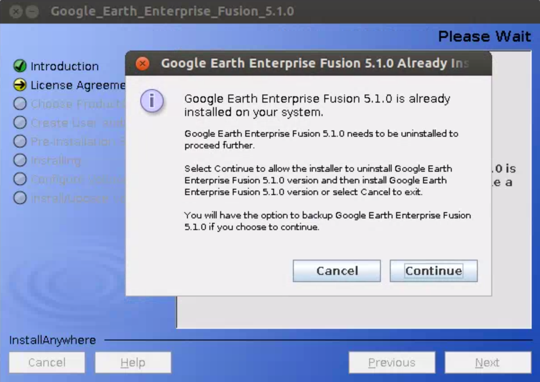
Click Backup to begin the backup of your previous configuration or Skip to continue the installation process without the backup option.
Note: The configuration backup does not change your source volume and asset root.
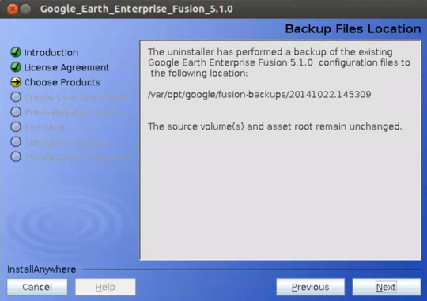
- Click Next to continue. The Uninstall screen appears:
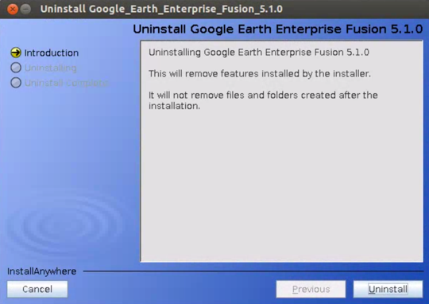
- Click Uninstall to uninstall your previous installation of Fusion and create a backup of your configuration, located in
/var/opt/google/fusion-backups/date.time/. - Click Done to continue. The Choose Products screen appears:
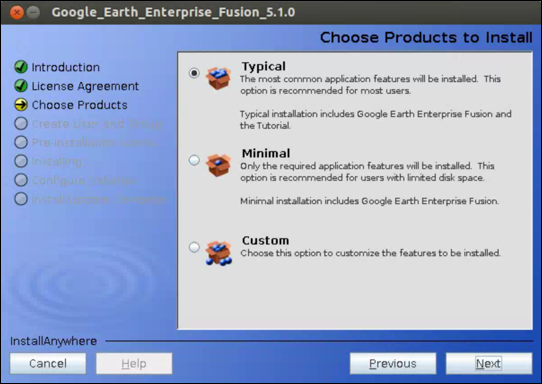
- Choose the installlation type or click Next to accept the default (Typical). If the installer determines it needs to upgrade any product you are installing, it prompts you to confirm the upgrade.
- Typical installation includes Google Earth Enterprise Fusion and the Tutorial.
- Minimal installation includes only Google Earth Enterprise Fusion.
- Custom installation allows you to customize the components you install.
- Create Google Earth Enterprise Fusion user and group names, either by selecting the Default User and Group option or Customize User and Group to specify your own user and group names.

- The Pre-Installation Summary appears:

- Click Install to continue. The installer prompts you to designate your asset root and source volumes. A source volume is a directory that contains your source data files.
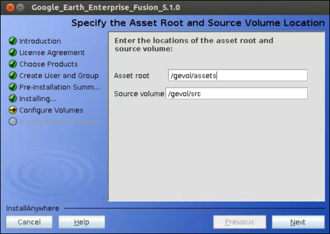
- Click Next to accept the default (
/gevol/assets and /gevol/src), or enter the paths you want to set for your asset root and source volume. (See Before you Install for more information.) - Click Next to Upgrade your asset root.
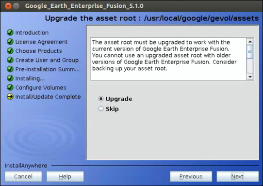
Select Upgrade to upgrade your asset root now or select Skip to run the asset upgrade process later when you access your asset root from Fusion.
- Click Next. The installation process finishes and displays the location of your installed Fusion files. Optionally you can run the Fusion daemon and start Fusion from this window.
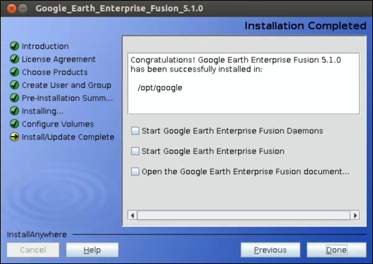
fusion
Installing Google Earth Enterprise Server
- Open a terminal window on your Linux workstation.
- Log in as
root. - Stop the Google Earth Enterprise Fusion system manager and Google Earth Enterprise Server, if you have a previous version installed and they are running:
/etc/init.d/gefusion stop
/etc/init.d/geserver stop
- Navigate to your DVD directory, or the directory to which you extracted the Google Earth Enterprise files, and run the Google Earth Server installer:
./InstallGEServerGUI.sh
If your DVD automounted without exec privileges, you might need to run
sh ./InstallGEServerGUI.shinstead.The installation script starts running and the following window appears:

- Click Next to continue. You can click Cancel to exit the installation process or Previous to return to the previous screen at any time. The License Agreement appears:
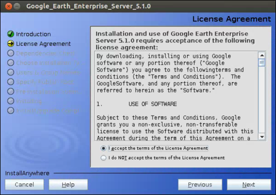
- Accept the License Agreement and click Next.
- The installation process provides you with the option to back up your previous configuration.
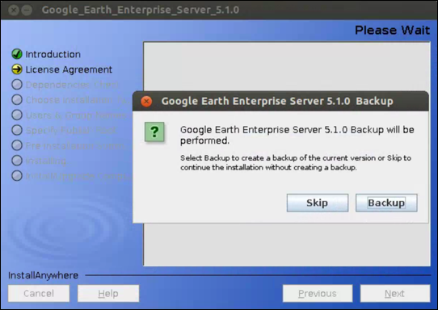
Click Backup to begin the backup of your previous configuration or Skip to continue the installation process without the backup option.
Note: The configuration backup does not change your source volume and asset root.
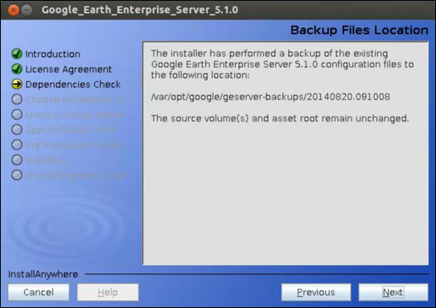
- Click Next. The Uninstall screen appears.
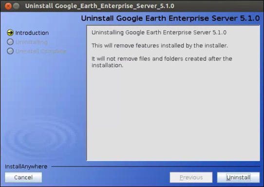
- Click Uninstall to uninstall your previous installation of GEE Server and create a backup of your configuration, located in
/var/opt/google/geserver-backups/date.time/. - Click Done. The Choose products screens appears:
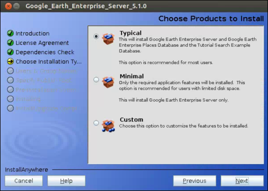
- Choose the installlation type click Next to accept the default (Typical). If the installer determines it needs to upgrade any product you are installing, it prompts you to confirm the upgrade.
- Typical installation includes Google Earth Enterprise Server, Google Earth Enterprise Places Database, and Google Earth Enterprise Search Example Database.
You can use the Places Database for POI, GeoFederated, and Coordinate searches. See Publish databases with search.
For how to create custom search plug-ins, including description of the Search Example plug-in, see Add custom search services.
- Minimal installation includes only Google Earth Enterprise Server.
- Custom installation includes the Disconnected Add-On, a mechanism to enable you to push databases via portable media when, for example, GEE Server is not connected to a network.
- Typical installation includes Google Earth Enterprise Server, Google Earth Enterprise Places Database, and Google Earth Enterprise Search Example Database.
- Click Next to continue. The User and Group Names screen appears:
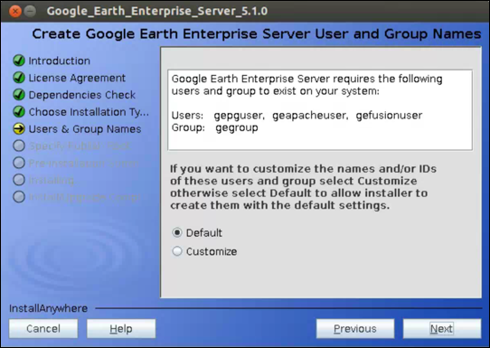
- If you want to customize user or group names or IDs, select Customize. Otherwise, select Default and click Next. The Publish Root Location screen appears:
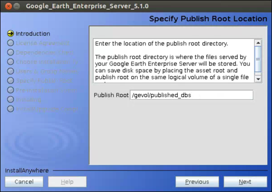
- The installer prompts you to designate your publish root. (See Before you Install for more information.)
The Pre-Installation summary appears.
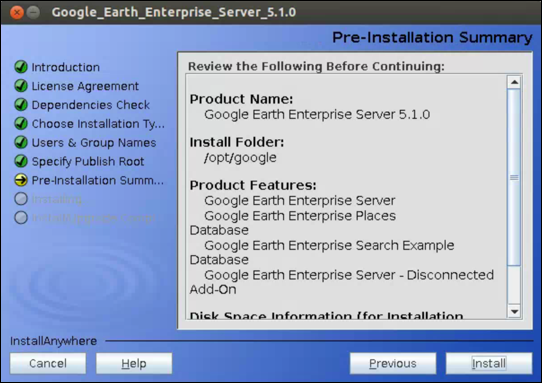
- Click Install. When the installer is finished, you can choose to start the Google Earth Server services.
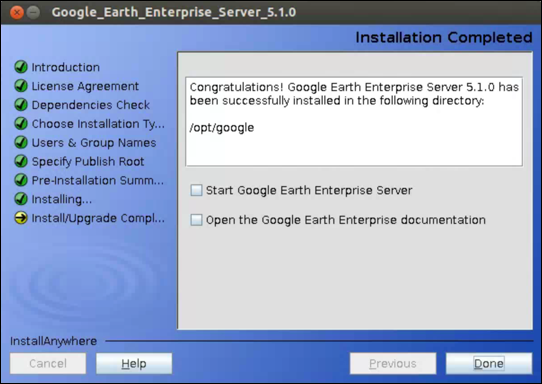
- Click Done to complete the installation.